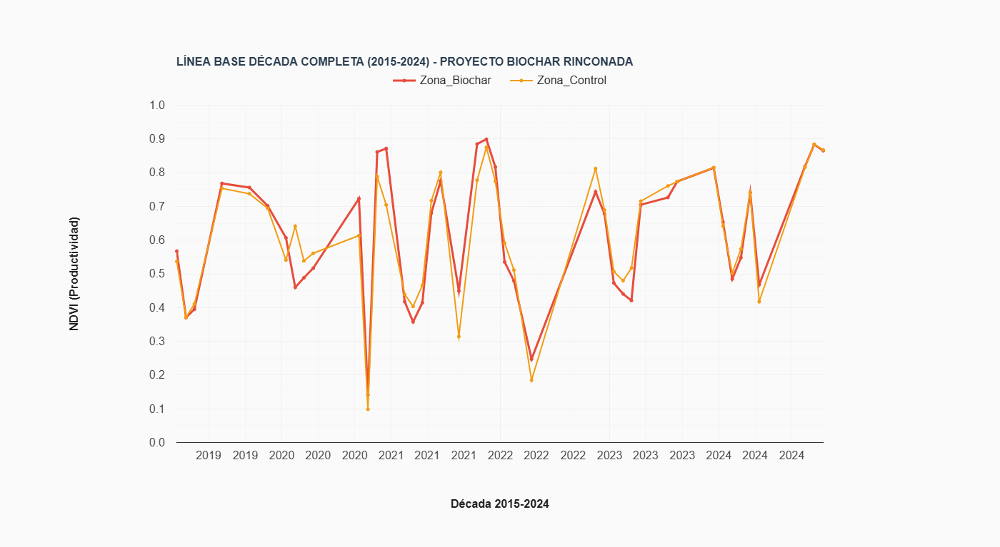

Proyecto Biochar Rinconada
Un experimento científico formal para medir el impacto del biochar en la productividad agrícola y el secuestro de carbono, con miras a la certificación de créditos de carbono.
IPP
Índice de Productividad Ponderado
10 Años
Línea Base (2015-2024)
Regresión Armónica
Modelado de Estacionalidad
Cert.
Certificación de Carbono
Resumen Ejecutivo
Experimento Científico Formal
Este no es solo un proyecto de monitoreo, sino un experimento científico riguroso con diseño de control y tratamiento.
Línea de Base de una Década
Se estableció una robusta línea de base de 10 años (2015-2024), validando estadísticamente la homogeneidad de las zonas (<1% de diferencia inicial).
Metodología Avanzada
Se utiliza un Índice de Productividad Ponderado (IPP) basado en IA y modelos de regresión armónica para una detección precisa de anomalías.
Objetivos de Alto Impacto
El proyecto busca generar datos para una tesis de magíster, publicaciones científicas y la certificación de créditos de carbono.
Visualizaciones y Datos

Línea Base de Productividad (2015-2024)
Serie temporal del Índice de Productividad Ponderado (IPP) para las zonas de control y tratamiento, demostrando su homogeneidad antes del experimento.
Metodología Científica
El proyecto se basa en un diseño experimental robusto y un análisis de series de tiempo de una década utilizando datos de Sentinel-2 y Landsat en Google Earth Engine.
1. Índice de Productividad Ponderado (IPP)
Se desarrolló un índice personalizado, IPP = f(EVI, SAVI, BSI), donde f es un modelo entrenado con IA para ponderar la contribución del verdor (EVI, SAVI) y reducir el ruido del suelo desnudo (BSI).
2. Modelado de Regresión Armónica
Se aplica un modelo de regresión armónica a la serie temporal de 10 años del IPP. Esto modela el ciclo fenológico natural de la pradera, permitiendo que cualquier desviación post-aplicación de biochar sea detectada como una anomalía significativa.
3. Diseño Experimental y Potencia
Se definieron una zona de tratamiento (2.8 ha) y una de control (1.6 ha). Un análisis de potencia estadística confirmó que el diseño puede detectar un cambio en la productividad >5% con un 80% de certeza, asegurando la validez de los resultados.